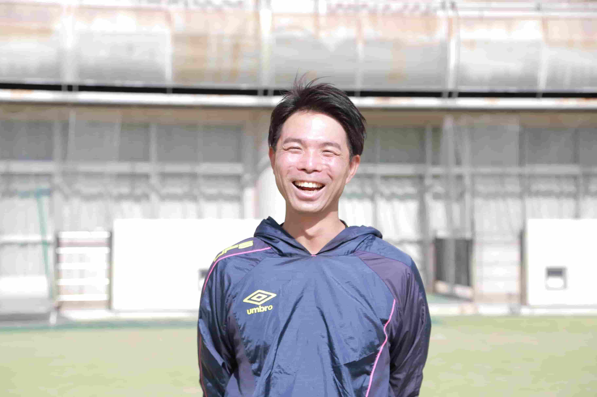

どんな団体？
About
「アンマリアトーレ」は、2003年から埼玉県川口市東領家で活動するサッカークラブです。瞬時の自己判断が必要なサッカーに求められる「自立」。そのために必要な「トライ＆エラー」という成長の原動力。そのために必要な「サッカーを楽しむ」という行為。これらの指導が私たちの最重要ミッションです。
幼児・小学生を募集！
Class
幼児（幼稚園・保育園児）、小学生を募集しています。
幼児クラス
礼儀やルール、周りを見て考え判断する力が身に付く幼児クラス。 ニコニコ笑顔で元気な子を、アンマリで一緒に育みましょう！
幼児クラスを詳しく小学生クラス
自分でトライ＆エラーができるようになる小学生クラス。 お子さんの可能性を大空のように広げてみませんか？
小学生クラスを詳しく